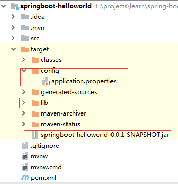
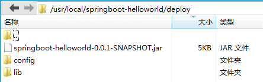
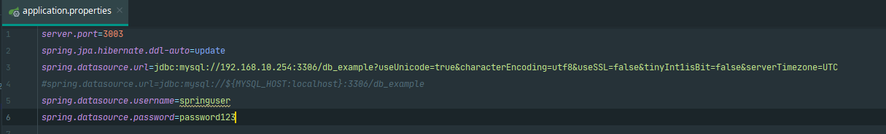
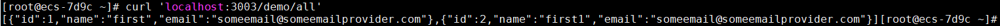
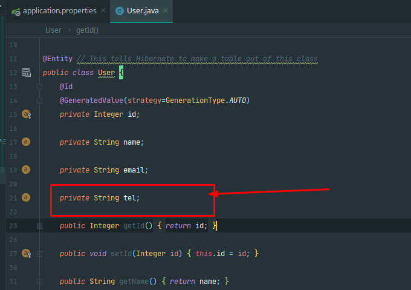
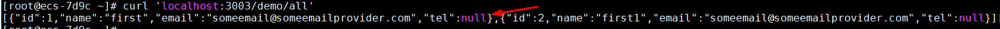
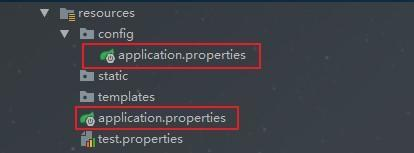
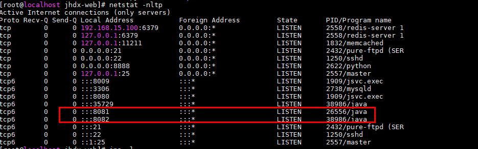

Spring Boot打包部署篇¶
Jar包、配置文件、依赖包分开打包¶
由于每次以jar包方式部署会有上面说的缺点，为了解决这些问题，可以将jar包、配置文件、依赖包分开打包。分开打包后，有如下好处：
1、可以实现当依赖包有变化时，才重新打包依赖包
2、配置文件也可以修改
3、由于依赖包和jar包分离，可以减少jar文件大小。jar文件减少，可以缩短上传到服务器的时间
第一步：pom文件修改如下：
<?xml version="1.0" encoding="UTF-8"?>
<project xmlns="http://maven.apache.org/POM/4.0.0"
xmlns:xsi="http://www.w3.org/2001/XMLSchema-instance"
xsi:schemaLocation="http://maven.apache.org/POM/4.0.0 http://maven.apache.org/xsd/maven-4.0.0.xsd">
<modelVersion>4.0.0</modelVersion>
<groupId>com.jltechcn</groupId>
<artifactId>jhdxccip</artifactId>
<packaging>pom</packaging>
<version>1.0-SNAPSHOT</version>
<properties>
<project.build.sourceEncoding>UTF-8</project.build.sourceEncoding>
<jdk.version>1.8</jdk.version>
<maven.test.skip>true</maven.test.skip>
</properties>
<dependencyManagement>
<dependencies>
<dependency>
<groupId>org.springframework.boot</groupId>
<artifactId>spring-boot-starter-web</artifactId>
<version>1.5.10.RELEASE</version>
<type>pom</type>
<scope>import</scope>
</dependency>
</dependencies>
</dependencyManagement>
<modules>
<module>web</module>
</modules>
<!-- 构建发布包，将tar,lib,resource,properties配置分离构建 -->
<build>
<plugins>
<plugin>
<groupId>org.apache.maven.plugins</groupId>
<artifactId>maven-compiler-plugin</artifactId>
<version>3.1</version>
<configuration>
<source>${jdk.version}</source>
<target>${jdk.version}</target>
<compilerVersion>${jdk.version}</compilerVersion>
<encoding>UTF-8</encoding>
</configuration>
</plugin>
<!-- 构建jar包-->
<plugin>
<groupId>org.apache.maven.plugins</groupId>
<artifactId>maven-jar-plugin</artifactId>
<version>3.2.0</version>
<configuration>
<excludes>
<exclude>*.properties</exclude>
<exclude>*.yml</exclude>
</excludes>
<archive>
<manifest>
<!-- 为依赖包添加路径, 这些路径会写在MANIFEST文件的Class-Path下 -->
<mainClass>com.jltechcn.core.SpringApplications</mainClass>
<addClasspath>true</addClasspath>
<classpathPrefix>lib/</classpathPrefix>
<!-- 打包时 MANIFEST.MF文件不记录的时间戳版本 -->
<useUniqueVersions>false</useUniqueVersions>
</manifest>
<manifestEntries>
<!-- 在Class-Path下添加配置文件的路径 -->
<Class-Path>resources/</Class-Path>
</manifestEntries>
</archive>
</configuration>
</plugin>
<!-- 构建resources文件 -->
<plugin>
<groupId>org.apache.maven.plugins</groupId>
<artifactId>maven-resources-plugin</artifactId>
<version>3.2.0</version>
<executions>
<execution>
<id>copy-properties</id>
<phase>process-sources</phase>
<goals>
<goal>copy-resources</goal>
</goals>
<configuration>
<outputDirectory>${basedir}/target/resources</outputDirectory>
<resources>
<resource>
<directory>${basedir}/src/main/resources</directory>
</resource>
</resources>
</configuration>
</execution>
</executions>
</plugin>
<!-- 构建依赖包文件 -->
<plugin>
<groupId>org.apache.maven.plugins</groupId>
<artifactId>maven-dependency-plugin</artifactId>
<executions>
<execution>
<id>copy</id>
<phase>package</phase>
<goals>
<goal>copy-dependencies</goal>
</goals>
<configuration>
<outputDirectory>target/lib/</outputDirectory>
</configuration>
</execution>
</executions>
</plugin>
</plugins>
</build>
</project>
第二步：在idea中Terminal控制台执行maven打包命令
mvn clean package -Dmaven.test.skip=true
命令执行完毕后，在target目录下生成了jar包、config、lib三部分，如下图：

第三步：使用xftp将jar包上传到服务器/usr/local/springboot-helloworld/deploy目录下

第四步：运行jar包
先切换到jar包所在目录：
cd /usr/local/springboot-helloworld/deploy/
springboot默认启动端口为8080，为了测试分开打包后可以修改配置文件，在application.properties文件中修改启动端口为3003

运行jar:
java -jar springboot-helloworld-0.0.1-SNAPSHOT.jar
在控制台可以看到启动端口变成了3003，如下图Tomcat started on port(s):3003：
第五步：创建数据库对应的应用账号
更改权限¶
使用grant all privileges on来更改用户对应某些库的远程权限
语法模板¶
grant all privileges on 库名.表名 to '用户名'@'IP地址' identified by '密码' with grant option; flush privileges;
注：¶
库名:要远程访问的数据库名称,所有的数据库使用“” 表名:要远程访问的数据库下的表的名称，所有的表使用“” 用户名:要赋给远程访问权限的用户名称 IP地址:可以远程访问的电脑的IP地址，所有的地址使用“%” 密码:要赋给远程访问权限的用户对应使用的密码
mysql> create user 'springuser'@'%' identified by 'password123'; -- Creates the user
mysql> grant all on db_example.* to 'springuser'@'%'; -- Gives all privileges to the new user on the newly created database
mysql> revoke all on db_example.* from 'springuser'@'%';
mysql> grant select, insert, delete, update,alter on db_example.* to 'springuser'@'%';
给springuser 数据库db_example所有权限
mysql> grant all on db_example.* to 'springuser'@'%';
给root所有的权限
mysql> grant all privileges on *.* to root@"%" identified by ".";
Query OK, 0 rows affected (0.00 sec)
备注：mysql5.7 客户端用IP访问，需要单独再给root设置一个与本地localhost不一样的登陆密码
mysql> GRANT ALL ON *.* TO root@'%' IDENTIFIED BY '123456'
mysql> flush privileges;

修改源代码User实体类，添加tel字段，重新构建发布包，并只上传jar包到服务器，停止之前的进程，再次运行之后发现，数据字段已更新;


配置文件的优先级
application.properties和application.yml文件可以放在一下四个位置：
- 外置，在相对于应用程序运行目录的/congfig子目录里。
- 外置，在应用程序运行的目录里
- 内置，在config包内
- 内置，在Classpath根目录
同样，这个列表按照优先级排序，也就是说，src/main/resources/config下application.properties覆盖src/main/resources下application.properties中相同的属性，如图：

此外，如果你在相同优先级位置同时有application.properties和application.yml，那么application.yml里面的属性就会覆盖application.properties里的属性。
Profile-多环境配置¶
当应用程序需要部署到不同运行环境时，一些配置细节通常会有所不同，最简单的比如日志，生产日志会将日志级别设置为WARN或更高级别，并将日志写入日志文件，而开发的时候需要日志级别为DEBUG，日志输出到控制台即可。 如果按照以前的做法，就是每次发布的时候替换掉配置文件，这样太麻烦了，Spring Boot的Profile就给我们提供了解决方案，命令带上参数就搞定。
这里我们来模拟一下，只是简单的修改端口来测试
在Spring Boot中多环境配置文件名需要满足application-{profile}.properties的格式，其中{profile}对应你的环境标识，比如：
-
application-dev.properties：开发环境
-
application-prod.properties：生产环境
-
想要使用对应的环境，只需要在application.properties中使用spring.profiles.active属性来设置，值对应上面提到的{profile}，这里就是指dev、prod这2个。 当然你也可以用命令行启动的时候带上参数：
java -jar xxx.jar --spring.profiles.active=dev
除了spring.profiles.active来激活一个或者多个profile之外，还可以用spring.profiles.include来叠加profile
spring.profiles.active: testdb
spring.profiles.include: proddb,prodmq
前台或后台运行
#前台运行，关闭窗口后退出
java -jar /jar包路径
#后台运行
nohup java -jar /jar包路径
#后台运行，指定启动日志记录文件
nohup java -jar /jar包路径 > /指定日志文件路径
nohup java -jar jhdxweb-1.0-SNAPSHOT.jar > ./logs/run.log 2>&1 &
查看应用是否启动¶
netstat -nltp

jps -l
一键启动脚本¶
新建run_jar.sh文件,内容如下
#!/bin/bash
#--------------------------------------------
# Springboot项目jar包启动脚本
# author：yichaoo
# date:2020/9/18
# description:
# 脚本核心命令
# 后台启动进程:nohup java -jar jhdxweb-1.0-SNAPSHOT.jar > /logs/run.log 2>&1 &
#-------------------------------------------
##### 定义全局变量和函数 开始 #####
#定义全局变量jar包路径和项目名称(不带版本号)
#根据实际项目名称和路径进行更改
PROJECT_NAME=jhdxweb
JAR_HOME=/www/java_app/jhdx-web
RUN_LOG=logs/run.log
#定义函数变量
#获取当前项目jar包进程id
funGetJarPID(){
pid=`jps -l | grep ${PROJECT_NAME} | awk -F" " '{ print $1 }'`
}
##### 全局变量配置区 结束 #####
echo "================begin====================="
echo "starting....."
funGetJarPID
echo "[INFO] 找到项目${PROJECT_NAME}的jar包进程${pid}"
while [ ${pid} ]
do
echo "[INFO] 正在结束项目${PROJECT_NAME}的jar包进程ID:${pid}....."
if [ ${pid} ]
then
kill -2 ${pid}
fi
funGetJarPID
done
echo "[INFO] 进程已结束"
echo "[INFO] 开始重新运行${JAR_HOME}目录下${PROJECT_NAME}*.jar包"
nohup java -jar ${JAR_HOME}/${PROJECT_NAME}*.jar > ${JAR_HOME}/${RUN_LOG} 2>&1 &
#如果命令执行成功，返回结果0
if [ $? == 0 ]
then
until [ ${pid} ]
do
funGetJarPID
echo "[INFO] jar包进程创建中...."
done
echo "[INFO] 进程已创建PID：${pid}"
echo "[INFO] 正在启动应用程序...."
until [ -n "$tomcat_running_port" ]
do
tail_info=`tail -2 ${JAR_HOME}/${RUN_LOG} | awk -F" - " '{print $2}'`
tomcat_running_port=`cat ${JAR_HOME}/${RUN_LOG} | grep 'Tomcat started' | awk -F" - " '{print $2}'`
echo "[INFO] ${tail_info}..."
sleep 2s
done
echo "[INFO] 成功运行项目${PROJECT_NAME}的jar包:${tomcat_running_port}"
echo "All success!"
else
echo "[ERROR] 进程创建失败!"
fi
echo "================end====================="